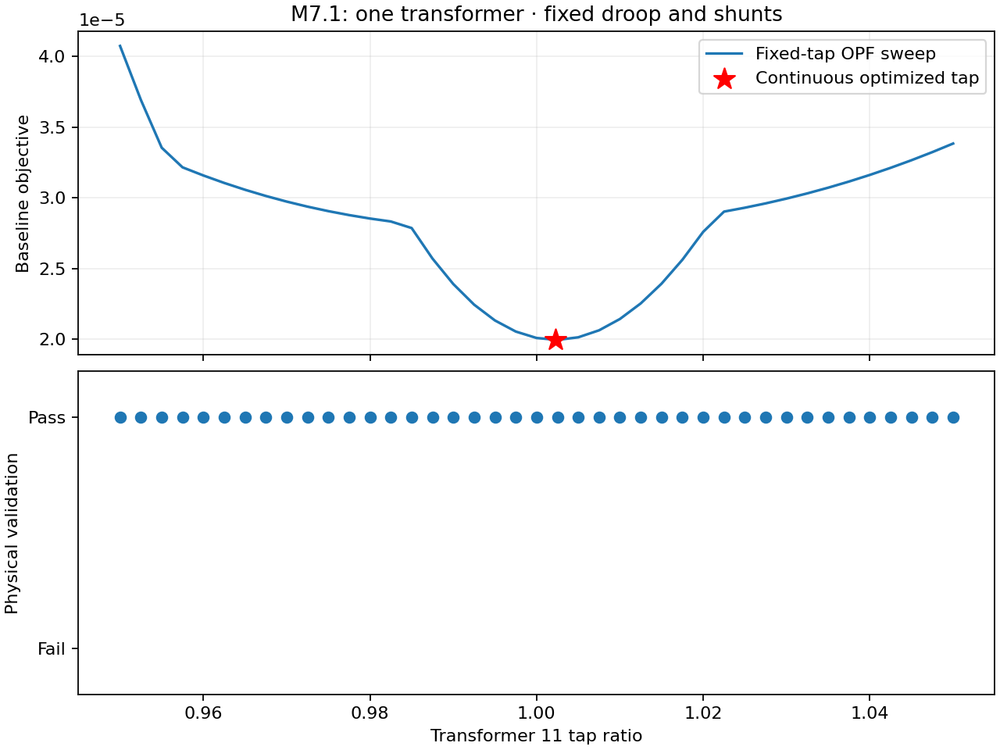
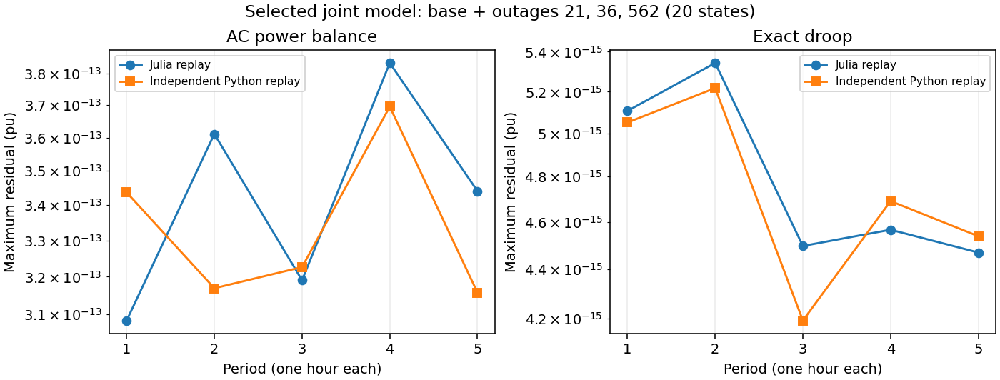
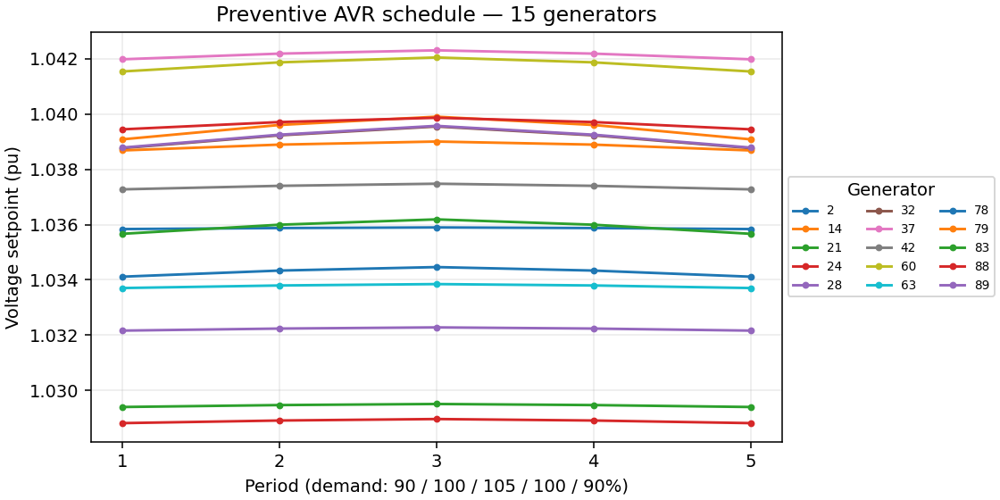

Validation figures
Selected numerical figures are shown separately from reports and tables. They explain the recorded checks; images alone do not establish acceptance. Figure sets that remain in private archives are not silently treated as published evidence.
M7 — Continuous equipment and joint droop optimization
M7.1 continuous tap sweep

Historical synthetic three-bus dispatch-deviation sweep. Fixed / one-free / two-free taps have maximum AC residuals 2.43e-15 / 2.87e-13 / 5.83e-14 pu. No global or large-network claim.
P2 — Scaling and qualification
P2 selected joint-model independent replay

Five periods, base plus outages 21/36/562: 20 selected joint-model states. Each point is a period maximum. This residual plot does not display all 389 catalogue trajectories; limits and policy checks are separate.
P2 preventive AVR schedule

Fifteen AVR targets frozen across outages within a period. Maximum hourly movement 0.00052050 pu, within 0.01 pu/hour; nominal ±0.02 pu clipped to normal bounds. Static setpoints, not excitation dynamics.
Reproduction
The historical tap-sweep image is copied unchanged. The two P2 plots can be regenerated from the bundled compact summary using python3 tools/release/plot_validation_references.py with matplotlib. This redraws saved numerical data and does not rerun optimization. See the compact numerical summary and source register.